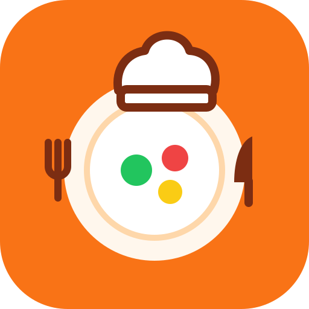

themealdb
.com
Buscar
★ Favoritos
0
⬇ Descargar app
Cargando recetas...
×
Descargar la app
Chrome / Edge (PC):
haz clic en el icono de instalar ( ⊕ ) en la barra de direcciones, o en el menú ⋮ →
Instalar Recetario
.
Android (Chrome):
menú ⋮ →
Agregar a la pantalla principal
o
Instalar app
.
iPhone (Safari):
botón Compartir →
Agregar a inicio
.
Entendido
¿Eliminar de favoritos?
Cancelar
Sí, eliminar